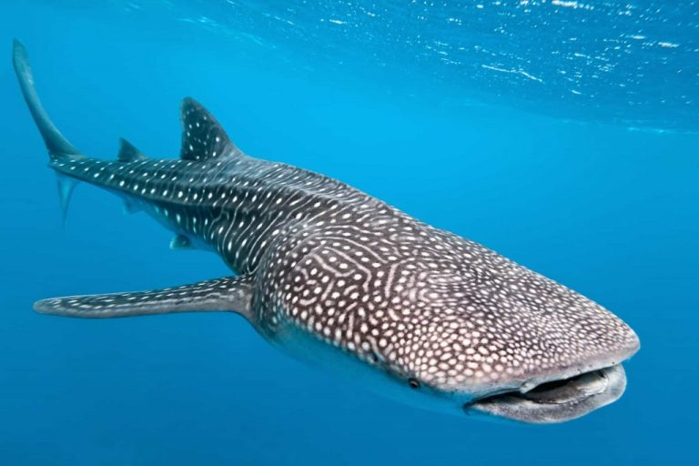
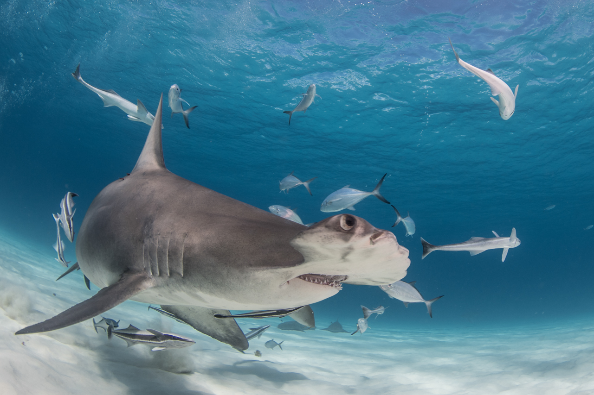

Temos a finalidade de compartilhar espécies já descobertas e suas curiosidades. Informando sobre a vida marinha na tentativa de preserva-la.Aceitamos doações para a realização de resgates.
Temos parcerias com hotéis especializados em vida passeios com animais marinhos, faça já o seu
ubarão-baleia pode atingir até 20 metros de comprimento, embora a média seja cerca de 12 metros, e pesar aproximadamente 12,5 toneladas . Seu corpo é fusiforme, alargando-se no centro e afinando nas extremidades, com cabeça achatada e boca grande, que pode ter até 1,5 metro de largura . Possui olhos pequenos, cinco fendas branquiais de cada lado e cerca de 300 dentes pequenos, cuja função ainda não é totalmente conhecida

é um gênero de tubarão, característico pelas projeções existentes em ambos os lados da cabeça, onde se localizam os olhos e as narinas. O tubarão-martelo é um predador que consome peixes, cefalópodes, raias e outros tubarões. Ocorre em áreas temperadas e quentes de todos os oceanos em zonas de plataforma continental. São animais gregários que se deslocam em cardumes que podem atingir 100 exemplares
